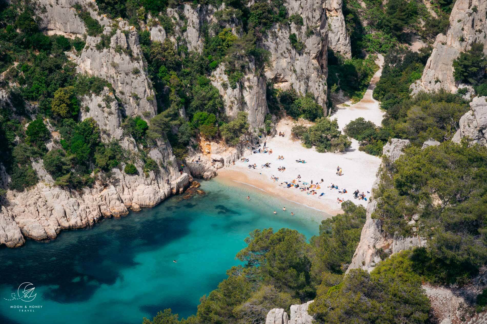
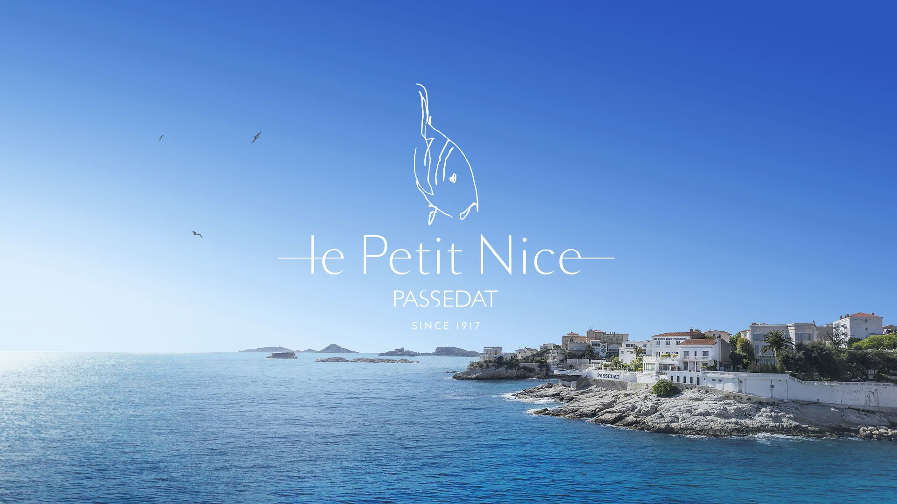
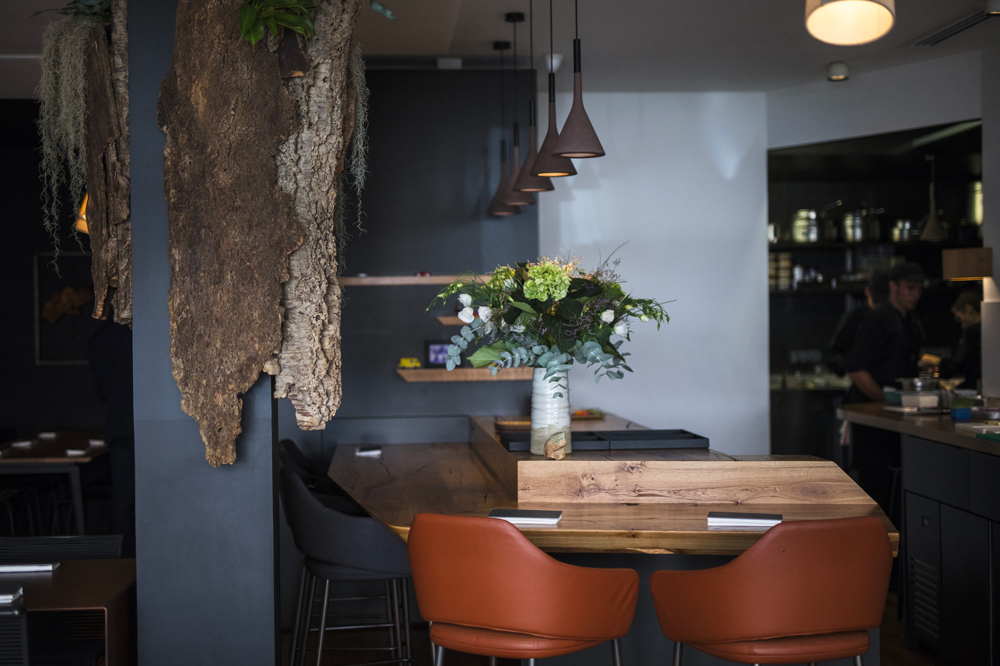

Book the dinner first. All three 3-star tables run narrow windows and sell out weeks ahead. The restaurant you choose determines whether a Friday or Saturday arrival makes more sense — and whether the Calanques are a standalone morning or a combined day-trip with dinner.
Marseille skips the 2-star tier entirely — the city has only 3-stars and 1-stars.[1] Pick one as the anchor; build everything else around it.

Le Petit Nice Passedat
Gérald Passedat's sea-view terrace has served Marseille since 1917. The kitchen works with 65+ species of long-line fish — no cream, no butter; the Mediterranean is the sauce.[27]

AM par Alexandre Mazzia
Ex-pro basketball player, now 3-star chef. Sequences of 10–25 small plates draw on a childhood in Pointe-Noire: charred notes, 400+ house vinegars, spice pairings no one else attempts.[28]
Cassis
La Villa Madie
Dimitri Droisneau's private cove restaurant (3rd star 2022) pairs spectacular Cap Canaille views with menus calibrated daily to the Mediterranean catch. Droisneau visits every table himself.[26]
Pick La Villa Madie and the Calanques resolve themselves — a single day-trip to Cassis combines Calanque d'En-Vau (from the Cassis side), Cap Canaille, and dinner in a private cove in one slot, leaving your second day entirely for Marseille's city core.[23] Pick AM or Le Petit Nice and the Calanques become a standalone morning — boat tour from Vieux-Port year-round (€27–33),[10] or a Luminy bus-and-hike (October–May only).[12]
Evening
Arrive, settle, aperitif
Check in near the Vieux-Port. A pastis on a terrace — the cold anise ritual before any meal in Marseille. Easy dinner in Le Panier or Cours Julien; save appetite and budget for the starred meal ahead.
Morning
The Calanques
Boat tour from Quai des Belges (2h30–3h15), or bus to Luminy for the Sugiton hike if Oct–May. Either way, back in the city by early afternoon.
Afternoon
MuCEM · Fort Saint-Jean · Le Panier
One ticket (€11) covers MuCEM's exhibitions and the self-guided 12th-century fort, linked by footbridge with free panoramic rooftop terraces.[15] From there, walk north 10 minutes into Le Panier's narrow lanes; the Vieille Charité (Pierre Puget, 1670) is free inside.
Evening
The Michelin dinner
Reserved weeks ago. If you chose Le Petit Nice: walk the Corniche Kennedy first, then step off at the restaurant. If you chose AM: taxi or metro to the 8th arrondissement.
Notre-Dame de la Garde · Corniche · Vallon des Auffes
Climb to the Bonne Mère for the 360° panorama over the whole city and sea (free, daily from 7:00).[16] Walk the Corniche Kennedy south — 3.7 km of cliff-top promenade — arriving at Vallon des Auffes. Lunch bouillabaisse at Chez Fonfon.[14] Pick up navettes from Le Four des Navettes on the way to the station.
The Pocket Fishing Port
The bouillabaisse institution of the cove — fishermen of the valley supply the kitchen daily. The broth comes first; the fish follows. Expect €65+.[18]
Guillaume Sourrieu's dining room is built over the rocks at the port's mouth. If you want the bouillabaisse and the star in one address — this is the answer. Fanny menu ~€135.[21]
Bouillabaisse: The Charter
A 1980s charter binds the serious houses to locally caught rockfish, proper saffron broth, and croutons with rouille — served broth-first over bread, then the fish as a second course.[19 via france.fr] Expect €65+ and often a pre-order. The charter houses of the Vieux-Port:
Le Miramar
Chef Christian Buffa, Maître Cuisinier de France, charter co-founder.[19]
Chez Fonfon
Five-fish bouillabaisse; the port's own fishermen fill the kitchen.[18]
Notre-Dame de la Garde
The "Bonne Mère" basilica atop a 150m+ hill — the orientation stop. 360° panorama over city and sea; 800+ years of pilgrimage.[16]
MuCEM + Fort Saint-Jean
Museum of European & Mediterranean Civilisations; one ticket, self-guided 12th-c. fort, free rooftop terraces. Footbridge between.[15]
Le Panier
Greek settlement c.600 BC; narrow lanes, street art, craft studios. The Vieille Charité (Puget, 1670) is free inside — two museums.[17]
Vieux-Port
2,600+ years as the city's lifeline. Morning fish market, Foster's mirror canopy, café terraces, and the launch point for every boat tour.
Corniche Kennedy
Cliff-top promenade from Catalans Beach to the Prado. Cycle path runs the whole length; ends at Vallon des Auffes.[13]
Le Four des Navettes
Marseille's oldest bakery, open since 1781. The orange-blossom, boat-shaped navette — the city's essential edible souvenir.[22]
| When to go | May or September — pleasant, thin crowds, Calanques open to hikers without fire-restriction closures. July–August: 30°C, peak crowds, hotels up 50%.[24] |
| Getting in | Direct TGV Paris → Marseille Saint-Charles in ~3h10–3h30. Airport shuttles link Marseille-Provence to Saint-Charles. |
| Getting around | Walkable core + RTM (2 metro lines, 3 trams, dense buses). One ticket transfers across modes for ~1 h. City Pass 72h = €52 — includes unlimited transport + MuCEM + Frioul/Château d'If ferry + château.[25] |
| Day trips | Cassis by TER (~30 min); Aix-en-Provence (~30 min); Frioul islands + Château d'If by 20-min ferry from Vieux-Port.[23] |
| Calanques ⚠ | Sugiton + Pierres Tombées require a free QR booking on peak 2026 dates (27 Jun–30 Aug daily + selected Jun/Sep weekends) — capped at 400/day vs. peaks of 2,500. Book from 9:00 three days ahead.[11] |
| Safety | Pickpocketing around Vieux-Port, Saint-Charles and Noailles is the real tourist risk. Normal city caution suffices. |